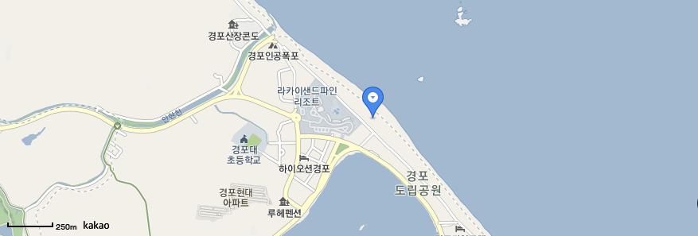

경포 해수욕장
강원도 강릉시
기본정보
동해안 최대 해변으로 유명하며, 강문동, 안한동에 있고 시내에서 북으로 6km, 경포대에서 1km되는 곳에 동해의 푸르름을 가득 담고 펼쳐진 해수욕장이다. 거칠면서도 시원하게 밀려오는 파도, 길이 1.8km, 면적1.44km의 하얀 백사장과, 울창한 소나무가 병풍처럼 조화가 어우러진 해수욕장이다.
- 홈페이지 : https://www.gn.go.kr
- 주소 : 강원도 강릉시 청해로 514
- 애완견 : 동반가능, 시각장애인 편의 시설
- 주차 : 장애인 주차장 있음(공영주차장 내부)_ 무장애 편의시설 무료이용 가능
- 유모차 : 대여가능(2대,경포해변 본부)